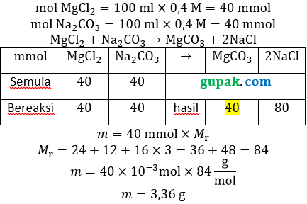

Proses kontak menggunakan katalis V2H5 . Proses ini diawali dengan melelehkan sulfur kemudian pembakaran sulfur menjadi gas SO2. Kemudian, gas SO2 dikonversikan menjadi gas SO3 dengan katalis V2H5 dan terakhir gas tersebut direaksikan dengan air membentuk asam sulfat H2SO4 dengan kadar sekitar 98%

Korosi
1. Air dan kelembapan udara
2. Elektrolit
3. Permukaan logam yang tidak rata
4. Terbentuknya sel elektrokimia